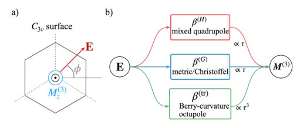
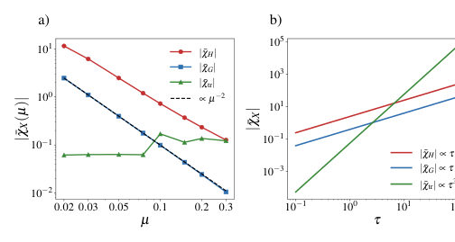
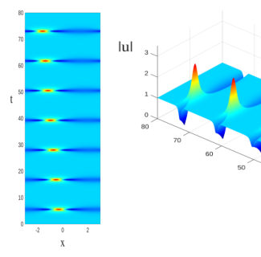
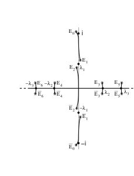
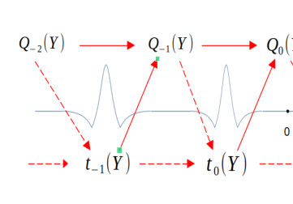
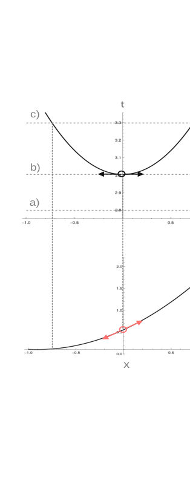
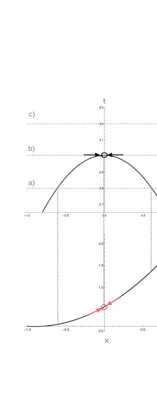

Authors: T. Farajollahpour
Type: theory · Category: other · PDF: https://arxiv.org/pdf/2605.27277v1
Analysis basis: full PDF text, analyzed in chunks


Summary. This paper provides a theoretical framework to identify three different quantum-geometric origins of cubic orbital magnetization in noncentrosymmetric materials. It establishes clear experimental 'fingerprints' using gate-tunable spectroscopy and frequency-dependent measurements to distinguish between metric, transport, and quadrupole contributions. This work is significant for the development of orbitronics and the study of topological phases.
Why it may be interesting. not directly relevant
Main problem. The paper aims to decompose and distinguish between three distinct quantum-geometric contributions to cubic orbital magnetization in noncentrosymmetric metals where linear and quadratic responses are symmetry-forbidden.
Main result. The authors identify three independent channels—a mixed electric-magnetic positional-shift quadrupole, a quantum-metric drift term, and an orbital-moment octupole—and provide specific experimental diagnostics (lifetime, frequency, and gate-voltage scaling) to separate them.
Method. A gauge-invariant, Ward-complete finite-momentum cubic Kubo response theory is developed using a generating-functional formulation and a lattice-regularized continuum model.
Model / system. The study focuses on noncentrosymmetric metals with C3v symmetry, such as topological insulator surfaces (Bi2Se3, Bi2Te3), hexagonal moiré heterobilayers, and zincblende crystals, using a two-band Hamiltonian with Rashba-like terms and cubic warping.
Key observables. Cubic orbital magnetization (Mz), mixed-quadrupole moment, quantum metric drift, and orbital-moment octupole; experimental probes include third-harmonic magneto-optical Kerr spectroscopy (THG-MOKE).
Important parameters / regimes. Chemical potential (mu), relaxation time (tau), frequency (omega), warping strength (lambda), and point-group symmetry (C3v, Td, PT-symmetric).
Assumptions / limitations. The primary theoretical framework assumes a clean, noninteracting electron system with a scalar relaxation time and a Ward-complete kernel.
Figures summary. Figure 1 illustrates the symmetry filtering mechanism; Figure 2 shows the scaling of the three coefficients with chemical potential and relaxation time; Supplemental figures demonstrate lattice regularization convergence and experimental diagnostic utility.
Paper structure. The paper begins by defining the symmetry-forbidden regime, develops a Ward-complete cubic Kubo kernel, decomposes the response into three geometric channels, provides a lattice-based regularization for the continuum model, and concludes with experimental signatures and background discrimination strategies.
In noncentrosymmetric metals such as $C_{3v}$ topological-insulator surfaces, moiré heterobilayers, and zincblende crystals, point-group symmetry can forbid the linear and quadratic electric-field-induced orbital magnetization, leaving the cubic response as the leading signal. Using a Ward-complete finite-momentum cubic Kubo kernel with an antisymmetric linear-in-$q$ projection, we show that the dc response separates into three quantum-geometric channels. These are a mixed electric-magnetic positional-shift quadrupole, a quantum-metric drift term, and an orbital-moment octupole. The three contributions share the same point-group symmetry but differ in their lifetime, frequency, and gate fingerprints. For a warped $C_{3v}$ surface the metric channel obeys the cutoff-independent law $\barχ_G \propto μ^{-2}$. We propose third-harmonic magneto-optical Kerr spectroscopy as an experimental route.
Authors: Francesco Coppini, Paolo Maria Santini
Type: theory · Category: other · PDF: https://arxiv.org/pdf/2605.26961v1
Analysis basis: full PDF text, analyzed in chunks





Summary. This paper demonstrates that while the initial formation of rogue waves is universal across different multidimensional nonlinear Schrödinger models, their subsequent recurrence and the complex processes of splitting (fission) and merging (fusion) are highly dependent on the specific physical model. The authors provide an analytical framework using finite gap theory to quantitatively describe these complex wave choreographies.
Why it may be interesting. not directly relevant
Main problem. The study investigates the recurrence dynamics, fission, and fusion of x-periodic anomalous (rogue) waves in the quasi one-dimensional regime of multidimensional nonlinear Schrödinger equations.
Main result. While the first stage of modulation instability is universal across different models, subsequent recurrence stages exhibit significant O(1) differences and increasingly complex fission and fusion processes depending on the specific MNLS model.
Method. The authors utilize finite gap perturbation theory, matched asymptotic expansions, and adiabatic deformations of the Akhmediev breather solution, validated by numerical split-step simulations.
Model / system. Multidimensional nonlinear Schrödinger (MNLS) equations, specifically the elliptic (ENLS) and hyperbolic (HNLS) NLS equations in 2+1 and 3+1 dimensions, representing systems like water waves, nonlinear optics, and plasma physics.
Key observables. Wave amplitude, fission and fusion times, wave trajectories in the space-time plane, and the trace of the monodromy matrix.
Important parameters / regimes. The quasi one-dimensional regime (small ratio of x-wavelength to transverse wavelength), perturbation amplitude (epsilon), and the ratio (delta/epsilon)^2.
Assumptions / limitations. The system is treated as a multidimensional perturbation of the integrable 1D NLS equation, assuming smallness of nonlinear, nonlocal, and non-integrable terms.
Figures summary. Figures show numerical evolution of wave amplitude, spectral diagrams of the complex lambda-plane, schematic diagrams of the two-step recurrence scheme, and snapshots of the fission and fusion processes in HNLS and ENLS models.
Paper structure. The paper introduces the problem of Q1D rogue waves, establishes the universality of the first nonlinear stage, develops a finite gap perturbation theory for recurrence, analyzes the specific fission/fusion dynamics of different MNLS models, and validates results with numerical simulations.
In a recent work we studied the first nonlinear stage of modulation instability (NLSMI) of x-periodic anomalous (rogue, freak, extreme) waves (AWs) of physically relevant multidimensional (generalizations of the focusing) nonlinear Schrödinger (MNLS) equation, like the non integrable elliptic and hyperbolic nonlinear Schrödinger (NLS) equations in d+1 dimensions, d = 2, 3, in the quasi one dimensional (Q1D) regime in which the wavelength in the direction of propagation x is small with respect to the wavelengths in the transversal directions. We showed that, at leading order, the first NLSMI is universal, independent of the particular MNLS model, and described by suitable adiabatic deformations of the quasi-homoclinic Akhmediev breather solution of NLS, in excellent agreement with numerical simulations. In the present work we focus on the recurrence of x-periodic AWs in the Q1D regime. We show that, although the first nonlinear stage of MI is essentially universal for all MNLS equations, the recurrence dynamics exhibit significant O(1) differences among different models. Moreover, successive nonlinear stages generally display increasingly complex combinations of fission and fusion processes, leading to progressively richer dynamical choreographies. Since MNLS equations in the Q1D regime can be viewed as multidimensional perturbations of the integrable NLS equation, we use the recently developed finite gap perturbation theory of NLS AWs to give an analytic and quantitative description of the recurrence of Q1D AWs, in excellent agreement with numerical simulations. Due to the physical relevance of the MNLS equations considered in this work, and due to the universality of the processes discussed in this paper, it is plausible that they be observable in many fields of physics, like water waves, nonlinear optics, plasma physics, Bose-Einstein condensates, etc . . .